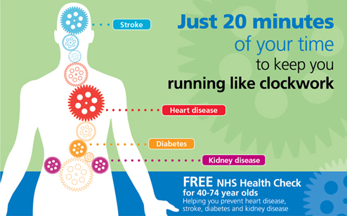

Welcome to
Withnell Health Centre

With patients' needs at the heart of everything we do, our website has been designed to make it easy for you to gain
instant access to the information you need.
As well as specific practice details such as opening hours, services we offer and how to register,
you’ll find a wealth of useful pages covering a wide range of health issues along with links to other relevant medical organisations.
Withnell Health Centre is open as usual as we continue to provide care to all our patients.
We are offering both face to face and telephone appointments.
We are still asking you not to come to the Practice if you have any COVID symptoms or any suspected contagious diseases - please telephone and we can arrange a telephone appointment.
Opening Times:
Monday: 8am - 6.30pm
Tuesday: 8am - 6.30pm
Wednesday: 8am - 6.30pm
Thursday: 8am - 6.30pm
Friday: 8am - 6.30pm
If you would like to book an appointment with the doctor, please call reception on 01257 442570 at
8am on day that you wish to be seen. We also have a number of prebookbale appointments which you can book whether by telephone or alternatively, you can book online via the NHS App. All appointments will be triaged by the reception team, this means that you will be asked to give a brief reason when booking an appointment.
This is to ensure you are seen and dealt with as quickly as possible with the most appropriate clinician.
Read more about the NHS app here: NHS app and your NHS account

Services available from your GP Surgery
Your GP surgery team is made up of a range of healthcare professionals with the expertise to help you with your health needs.
We offer a range of appointments including GP, Advanced Nurse Practitioner, Practice Nurse, Clinical Pharmacist who can complete in depth medication reviews, Health Care Assistant, Mental health Practitioner, social prescriber and we have a diabetic specialist clinic once a month for our diabetic patients. These are both Face to Face and via telephone.
The clinician carrying out your assessment and consultation will have full access to your GP record and will be able to complete all necessary investigations and prescription needs.
Click on Services tab and go to "Clinics and Services" to find out more information on the different services that we offer and how we can help you get the right care.
Friends and Family Data
We are proud of our Family and Friends Data.
In February 2024 our Friends and Family Test data reported over 97% of patients had a positive experience with the Health Centre. We will update this regularly.
Blood clinics
Our blood clinics are on a Monday and Tuesday at Withnell Health Centre. For alternative blood clinic days and times in our area, please click the link to see the blood clinic timetable.
Blood Clinic Timetable
Please note * Chorley Hospital no longer accept appointments for routine blood tests. Yo can walk in any day for urgent blood tests only. You will need an urgent blood form from your GP.
ENHANCED ACCESS
Our practice is part of a Primary Care Network (PCN). PCN’s are GP Practices working with other Practices in their local area. By working together, we can deliver more local services for our patients.
Patients registered at our practice are able to access evening and weekend appointments via our new Enhanced Access Service.
These are available in limited numbers between 18:30 and 20:00 Monday to Friday and on Saturdays between 09:00 and 17:00 at Withnell Health Centre. Please call reception to book an appointment, we offer both GP appointment and Practice Nurse appointments.
Repeat Prescriptions
To order repeat prescriptions please email us (withnellhealthcentre@nhs.net), use our website www.withnellhc.co.uk or if registered use patient access. You can also post via royal mail or pop your request in the post box at the surgery.
If you have ordered a repeat prescription it will automatically be sent to Withnell Pharmacy for collection unless you give us an alternative pharmacy.
Please ensure allow 48 hours for your prescription request to be processed.
If you would like to discuss your medication, ask any question regarding your medication or if you need a medication review, you can book an appointments with our Clinical Pharmacists on a Monday and Tuesday. These are telephone appointments unless requesting otherwise.
Please see our Spring/Summer 2023 Newsletter by clicking on the link below
Spring/Summer Newsletter 2023
Dates for 2023 Protected Training Sessions
Please note ** The Surgery will close on the following Tuesdays at 1.00 pm and re-open again on Wednesday morning at 8.00 am. Call 111 if you need a Doctor during this time.
- 27th February 2024
- 5th March 2024
- 9th April 2024
- 21st May 2024
- 11th June 2024
- 16th July 2024
- 17th September 2024
- 15th October 2024
- 26th November 2024
Get Well, Keep Well
Of course we’re not just here for when you are unwell.
We offer free NHS Health checks to all patients between the ages of 40 - 74. These checks can help you stay healthy and spot early signs of stroke, kidney disease, heart disease, type 2 diabetes or dementia. The find our more about NHS Health checks and what to expect, follow the link https://www.nhs.uk/conditions/nhs-health-check/
To book an appointment for an NHS Health check please call reception on 01257 442570.

Join In
We hope you enjoy having a look around the site and familiarising yourself with some of the online features such as ordering a repeat prescription.
Whatever your thoughts, be sure to let us know via our feedback function. Comments and suggestions are always a great way of helping us continue to enhance the way we look after you.
(Site updated 16/04/2024)